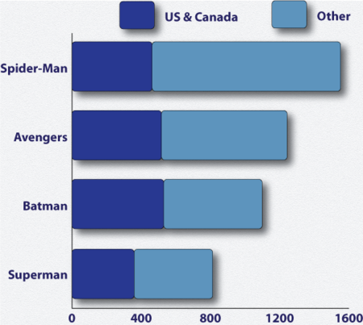
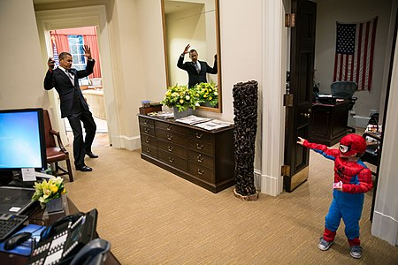

Cultural Impact And Legacy
In The Creation of Spider-Man, comic book writer-editor and historian Paul Kupperberg calls the character's superpowers "nothing too original"; what was original was that outside his secret identity, he was a "nerdy high school student".[183]: 5 Going against typical superhero fare, Spider-Man included "heavy doses of soap-opera and elements of melodrama". Kupperberg feels that Lee and Ditko had created something new in the world of comics: "the flawed superhero with everyday problems". This idea spawned a "comics revolution".[183]: 6 The insecurity and anxieties in Marvel's early 1960s comic books, such as The Amazing Spider-Man, The Incredible Hulk, The Fantastic Four, and The X-Men ushered in a new type of superhero, very different from the certain and all-powerful superheroes before them, and changed the public's perception of them.[184] Spider-Man has become one of the most recognizable fictional characters in the world, and has been used to sell toys, games, cereal, candy, soap, and many other products.
Spider-Man has often been used as the company mascot. When Marvel became the first comic book company to be listed on the New York Stock Exchange in 1991, The Wall Street Journal announced "Spider-Man is coming to Wall Street"; the event was in turn promoted with an actor in a Spider-Man costume accompanying Stan Lee to the Stock Exchange.[8]: 254 Since 1962, hundreds of millions of comics featuring the character have been sold around the world.[186] Spider-Man is the world's most profitable superhero.[187] In 2014, global retail sales of licensed products related to Spider-Man reached approximately $1.3 billion.[188] Comparatively, this amount exceeds the global licensing revenue of Batman, Superman, and the Avengers combined.[187] Spider-Man is also one of the highest-grossing franchise titles being the highest-grossing American comic book superhero[189][190] est. $25.6 billion worldwide.

Graph image depicting Spider-Man as the leading superhero
in merchandise retail sales worldwide
in 2016 (in millions)
Spider-Man joined the Macy's Thanksgiving Day Parade from 1987 to 1998 as one of the balloon floats,[193] designed by John Romita Sr.,[194] one of the character's signature artists. A new, different Spider-Man balloon float also appeared from 2009 to 2014.
When Marvel wanted to issue a story dealing with the immediate aftermath of the September 11 attacks, the company chose the December 2001 issue of The Amazing Spider-Man.[195] In 2006, Spider-Man garnered major media coverage with the revelation of the character's secret identity,[196] an event detailed in a full-page story in the New York Post before the issue containing the story was even released.
In 2008, Marvel announced plans to release a series of educational comics the following year in partnership with the United Nations, depicting Spider-Man alongside the UN Peacekeeping Forces to highlight UN peacekeeping missions.[198] A BusinessWeek article listed Spider-Man as one of the top 10 most intelligent fictional characters in American comics.
In 2015, the Supreme Court of the United States decided Kimble v. Marvel Entertainment, LLC, a case concerning royalties on a patent for an imitation web shooter. The opinion for the Court, by Justice Elena Kagan, included several Spider-Man references, concluding with the statement that "with great power, there must also come—great responsibility".
Spider-Man has become a subject of scientific inquiry. In 1987, researchers at Loyola University conducted a study into the utility of Spider-Man comics for informing children and parents about issues relating to child abuse.

Former U.S. President Barack Obama pretending to be webbed up by a boy dressed in a Spider-Man costume inside the White House
Reception
In 2005, Bravo's Ultimate Super Heroes, Vixens, and Villains TV series declared that Spider-Man was the number 1 superhero.[203] Empire magazine ranked him the fifth-greatest comic book character of all time.[204] Wizard magazine placed Spider-Man as the third-greatest comic book character on their website.[205] In 2011, Spider-Man placed third on IGN's Top 100 Comic Book Heroes of All Time, behind DC Comics characters Superman and Batman.[202] and sixth in their 2012 list of "The Top 50 Avengers".[206] In 2014, IGN identified Spider-Man the greatest Marvel Comics character of all time.[207] A 2015 poll at Comic Book Resources named Spider-Man the greatest Marvel character of all time.[208] IGN described him as the common everyman that represents many normal people but also noted his uniqueness compared to many top-tiered superheroes with his many depicted flaws as a superhero. IGN noted that, despite being one of the most tragic superheroes of all time, he is "one of the most fun and snarky superheroes in existence."[202] Empire praised Spider-man's always-present sense of humor and wisecracks in the face of the many tragedies he faces. The magazine website appraised the depiction of his "iconic" superhero poses describing it as "a top artist's dream".
George Marston of Newsarama called Spider-Man's origin the greatest origin story of all time, opining that "Spider-Man's origin combines all of the most classic aspects of pathos, tragedy and scientific wonder into the perfect blend for a superhero origin."
The culmination of nearly every superhero that came before him, Spider-Man is the hero of heroes. He's got fun and cool powers, but not on the god-like level of Thor. He's just a normal guy with girlfriend problems and money issues, so he's more relatable than playboy billionaire Iron Man. And he's an awkward teenager, not a wizened adult like Captain America. Not too hot and not too cold, Spider-Man is just right.
—IGN staff on placing Spider-Man as the number one hero of Marvel.
Real-life comparisons
Real-life people who have been compared to Spider-Man for their climbing feats include:
- In 1981, skyscraper-safety activist Dan Goodwin, wearing a Spider-Man suit, scaled the Sears Tower in Chicago, Illinois, the Renaissance Tower in Dallas, Texas, and the John Hancock Center in Chicago.
- Alain Robert, nicknamed "Spider-Man", is a rock and urban climber who has scaled more than 70 tall buildings using his hands and feet, without using additional devices. He sometimes wears a Spider-Man suit during his climbs. In May 2003, he was paid approximately $18,000 to climb the 95-metre (312 ft) Lloyd's building to promote the premiere of the movie Spider-Man on the British television channel Sky Movies.
- "The Human Spider", alias Bill Strother, scaled the Lamar Building in Augusta, Georgia in 1921.
- In Argentina, criminals that climb buildings and trespass into private property through the open balconies are said to use the "Spider-Man method" (in Spanish, "el Hombre Araña").